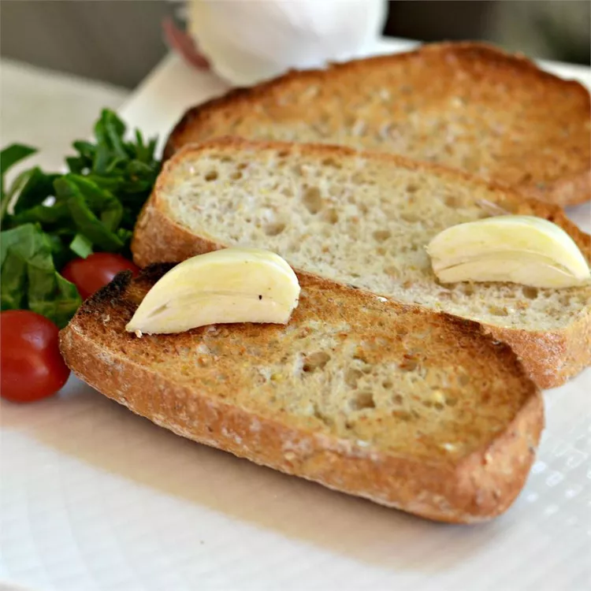

Garlic Toast

Description
Great garlic toast with no added fat! My family asks for this all the time!
Ingredients
- ½ (1 pound) loaf French baguette, cut into 1/2 inch slices
- 6 cloves garlic, halved
Steps
- Set the oven rack about 6 inches from the heat source and preheat the oven's broiler. Arrange baguette slices on a baking sheet.
- Toast in the preheated oven until golden brown, 5 to 10 minutes.
- Rub garlic halves on warm bread.